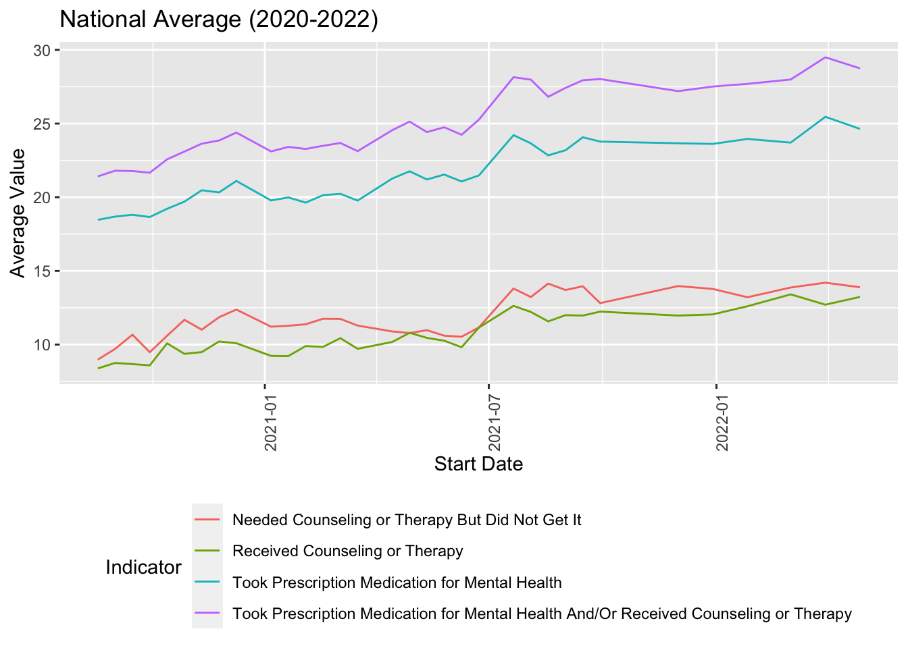
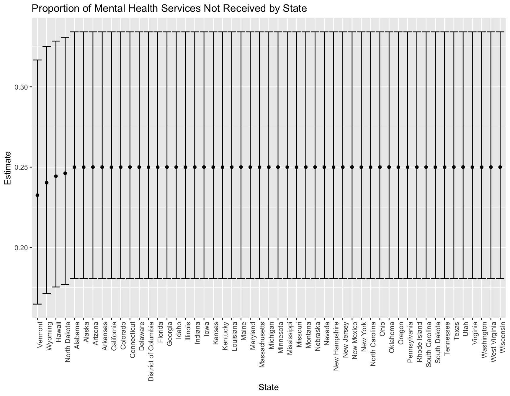

Let’s take a look at the national prevalence of each indicator of mental health access.
First, I filtered by states = United States to look only at national data rather then state-specific data. Next, I grouped by year, start date, and indicator to ensure I calculate the mean value for each indicator by start date. After calculating the mean, I plotted the mean value and start date to showcase the mean national value over time.

On average, those who took prescription medication for mental health and/or received counseling or therapy had the highest values while those who received counseling or therapy had the lowest values. There was a wide gap in average value between those who took prescription medication for mental health and those who needed counseling or therapy but did not get it. Overall, each indicator had a small increase in average value between 2020 and 2022.
I relabeled the observations for the variable indicator to “received” if they did obtain the mental health services (Took Prescription Medication for Mental Health, Received Counseling or Therapy, Took Prescription Medication for Mental Health And/Or Received Counseling or Therapy) and “not received” if they did not obtain the mental health services they needed (Needed Counseling or Therapy But Did Not Get It).
received_service =
data |>
mutate(
resolution = case_when(
indicator == "Took Prescription Medication for Mental Health" ~ "received",
indicator == "Received Counseling or Therapy" ~ "received",
indicator == "Took Prescription Medication for Mental Health And/Or Received Counseling or Therapy" ~ "received",
indicator == "Needed Counseling or Therapy But Did Not Get It" ~ "not received"))I created a data frame where I grouped by states to determine the number of total services, which includes the services received as well as the number of services not received, and the total number of services not received.
states_df =
received_service |>
select(state, indicator, resolution) |>
filter(state != "United States") |>
group_by(state) |>
summarize(
services_total = n(),
services_not_received = sum(resolution == "not received")) |>
mutate(
services_total = as.numeric(services_total),
services_not_received = as.numeric(services_not_received)
)Now, I focus only on the state of New York. Using the
prop.test and broom::tidy functions, I obtain
an estimate and CI of the proportion of mental health services not
received in New York (shown in the table below).
ny_test =
prop.test(
x = filter(states_df, state == "New York") %>% pull(services_not_received),
n = filter(states_df, state == "New York") %>% pull(services_total))
broom::tidy(ny_test) %>%
knitr::kable(digits = 3)| estimate | statistic | p.value | parameter | conf.low | conf.high | method | alternative |
|---|---|---|---|---|---|---|---|
| 0.25 | 32.008 | 0 | 1 | 0.181 | 0.334 | 1-sample proportions test with continuity correction | two.sided |
I apply prop.test and broom:tidy to obtain estimates and confidence intervals for the proportion of mental health services not received for each state.
services_states =
states_df |>
mutate(
prop_tests = map2(services_not_received, services_total, \(x, y) prop.test(x = x, n = y)),
tidy_tests = map(prop_tests, broom::tidy)) |>
select(-prop_tests) |>
unnest(tidy_tests) |>
select(state, estimate, conf.low, conf.high) |>
mutate(state = fct_reorder(state, estimate))Lastly, I plot showing the estimate (and CI) of the proportion of mental health services not received in each state.
services_states %>%
mutate(state = fct_reorder(state, estimate)) %>%
ggplot(aes(x = state, y = estimate)) +
geom_point() +
geom_errorbar(aes(ymin = conf.low, ymax = conf.high)) +
theme(axis.text.x = element_text(angle = 90, hjust = 1)) +
labs(
x = "State",
y = "Estimate",
title = "Proportion of Mental Health Services Not Received by State"
)
According to the plot, the majority of states had a similar estimate of proportion of mental health services not received within each state. However, Vermont, Wyoming, Hawaii, and North Dakota had distinct estimates, with a lower estimate compared to the remaining states. Overall, Vermont had the lowest estimate.